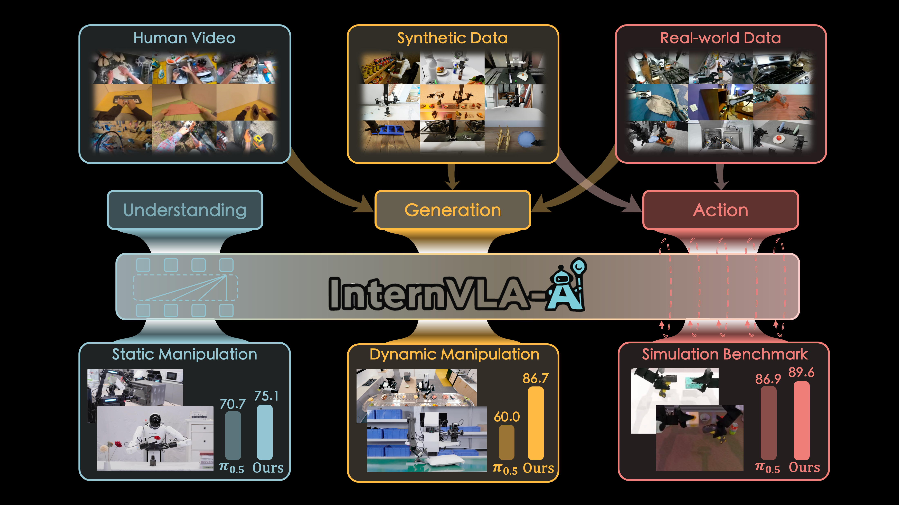
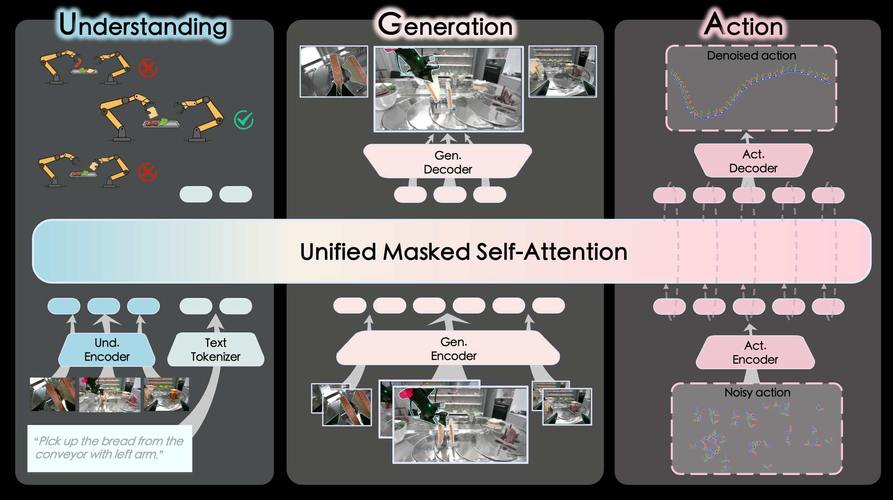
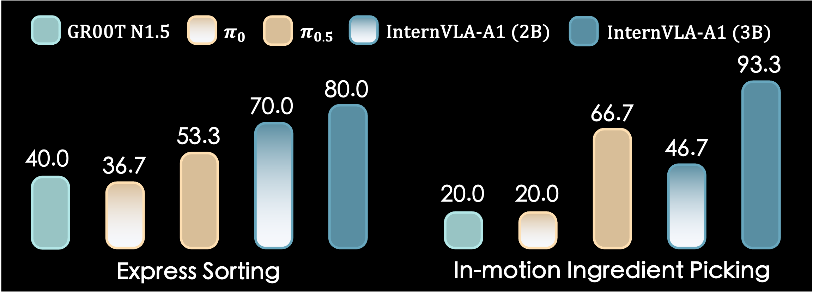
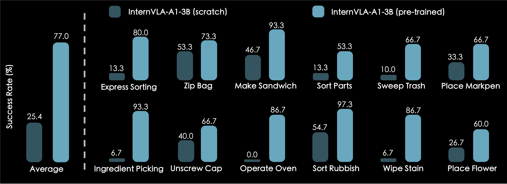
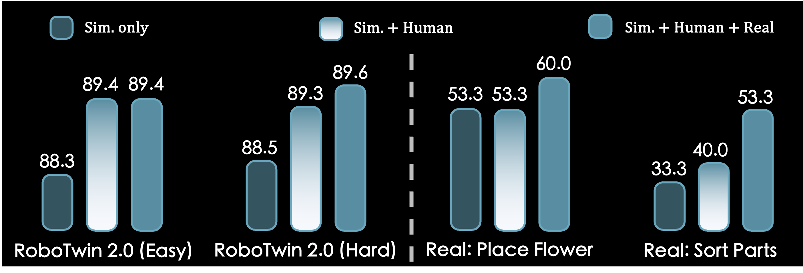
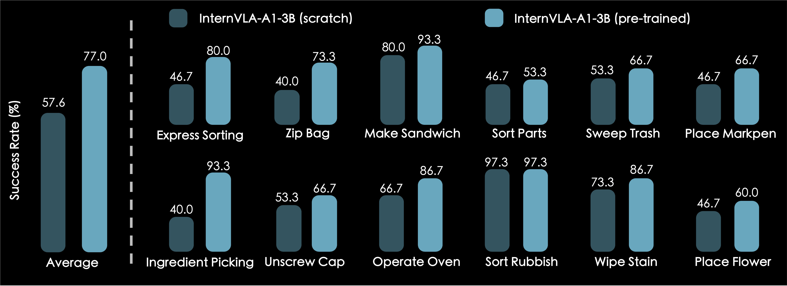

InternVLA-A1: Unifying Understanding, Generation
and
Action for Robotic Manipulation
Video Presentation
Unified Understanding-Generation-Action Framework

🔮 The Core: Synergizes MLLM's semantic understanding with world-model-style dynamic prediction, enabling it to "imagine" the future and guide adaptive actions.
🚀 The Fuel: Enables joint training on heterogeneous data sources over real-world robot data, synthetic simulation data, and egocentric human videos.
⚡ The Output: Tackles highly dynamic scenarios with effortless mastery.

InternVLA-A1 unifies scene understanding, visual foresight, and action execution via a Mixture-of-Transformers (MoT) framework:
(1) an understanding expert: parses image and text inputs to encode scene context;
(2) a generation expert: predicts future visual states and task dynamics;
(3) an action expert: utilizes these predictions to generate control commands via Flow Matching.
Dynamic Manipulation Tasks
『SHITF + SCROLL』 or 『→ ←』 to explore more demos
InternVLA-A1 exhibits remarkable superiority in highly dynamic scenarios, such as Express Sorting and In-motion Ingredient Picking, outperforming pi0.5 by +26.7%.

Static Manipulation Tasks
InternVLA-A1 demonstrates superior proficiency in dexterous and fine-grained manipulation (e.g., Unscrew Cap, Zip Bag, Sort Parts).
『SHITF + SCROLL』 or 『→ ←』 to explore more demos
Ablation Studies
Impact of Pre-training: without large-scale pretraining, the performance degrades dramatically. This highlights pre-training as a critical inductive prior.

Impact of Pre-training Dataset: jointly pre-training on heterogeneous data sources (human videos, synthetic data, and real-world demonstrations ) achieves the best overall performance, demonstrating the effectiveness of our joint training strategy.

Impact of Generation Expert: removing the generation expert significantly reduces the average success rate from 77.0% to 57.6%, which validates the superiority of the proposed generation expert and the unified architecture integrating understanding, generation, and action.
